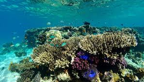

Oceanography Data
Dive into temperature, salinity and current patterns over time.
Explore Oceanography →Integrated marine data, maps, and visualizations for researchers.
Species Records
Surveys
Active Areas
Dive into temperature, salinity and current patterns over time.
Explore Oceanography →Species detection using eDNA and taxonomic classification tools.
Explore Taxonomy →Correlate ocean parameters with biodiversity and fisheries trends.
Explore Insights →The Centre for Marine Living Resources and Ecology (CMLRE), Kochi — under the Ministry of Earth Sciences — coordinates research and monitoring across India's EEZ. Marine-X is a prototype data backbone to integrate oceanographic, taxonomic, morphometric and molecular datasets to support science-driven fisheries and conservation decisions.